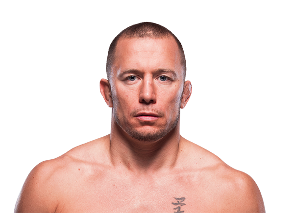

Georges St-Pierre, conocido mundialmente como GSP, es considerado uno de los mejores peleadores en la historia de las artes marciales mixtas. Nació el 19 de mayo de 1981 en Saint-Isidore, Quebec, Canadá. Desde muy joven comenzó a entrenar artes marciales, especialmente karate, lo que marcó el inicio de su carrera en los deportes de combate. Durante su infancia sufrió problemas de bullying en la escuela, lo que lo motivó a aprender a defenderse. Ese deseo de superación lo llevó a entrenar intensamente diferentes disciplinas de combate. Con el paso del tiempo desarrolló un estilo extremadamente completo, combinando striking técnico con una lucha dominante y un excelente control del combate.

Georges St-Pierre alcanzó fama internacional cuando comenzó a competir en la Ultimate Fighting Championship (UFC). Gracias a su impresionante habilidad atlética y su inteligencia estratégica, rápidamente ascendió hasta convertirse en campeón de la división de peso wélter. Durante su carrera defendió el título en múltiples ocasiones contra algunos de los mejores peleadores del mundo, consolidando uno de los reinados más dominantes en la historia de la UFC. Su capacidad para controlar el combate, derribar a sus oponentes y neutralizar sus ataques lo convirtió en uno de los atletas más completos que ha visto el MMA. Después de varios años retirado, regresó al deporte en 2017 y logró ganar el título de peso medio al derrotar a Michael Bisping, convirtiéndose así en campeón en dos divisiones diferentes.
Durante su carrera en MMA compitió principalmente en:
Georges St-Pierre es reconocido por:
Gracias a su profesionalismo, talento y consistencia, Georges St-Pierre se convirtió en una leyenda del MMA. Muchos analistas y fanáticos lo consideran uno de los mejores peleadores de todos los tiempos, no solo por sus victorias, sino también por su respeto hacia el deporte y sus oponentes.
El legado de Georges St-Pierre dentro del MMA es enorme. Sus defensas del título, su estilo completo y su mentalidad estratégica influyeron en toda una generación de peleadores. Además, siempre fue reconocido por su humildad, profesionalismo y respeto dentro y fuera del octágono, convirtiéndose en uno de los campeones más admirados en la historia de la UFC.
Otros peleadores que podrían interesarte: